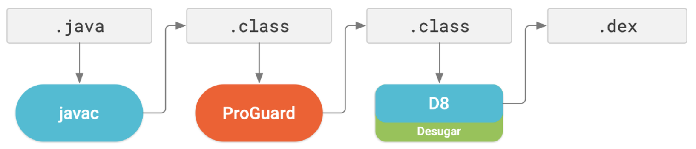
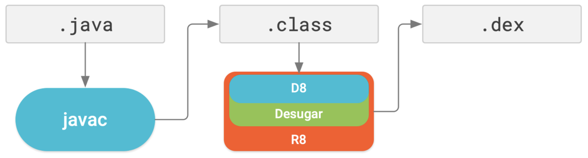

[Android] DEX 컴파일러
DEX 컴파일러
DEX 컴파일러는 자바 바이트코드를 안드로이드 시스템에서 실행 가능한 DEX 파일로 변환합니다. DEX 컴파일러는 오랜 시간에 걸쳐 발전해왔습니다.
(1) DX 컴파일러
D8 컴파일러가 출시되기 전까지 사용되었던 DEX 컴파일러입니다.
(2) D8 컴파일러
구글이 2018년 출시한 새로운 DEX 컴파일러입니다. Android Studio 3.0 버전부터 사용할 수 있으며, Android Studio 3.1 버전부터 기본 DEX 컴파일러가 되었습니다. DEX 컴파일러는 Android Gradle Plugin에 포함되어있습니다.
(3) R8 컴파일러
구글이 2019년 출시한 새로운 DEX 컴파일러입니다. Android Stuido 3.4 버전부터 사용할 수 있습니다. R8 컴파일러는 프로가드(ProGurad)가 기존에 수행하던 코드 난독화 및 최적화 작업을 대신 수행합니다. 따라서 Android Gradle Plugin 3.4.0 버전부터는 ProGuard 대신 R8 컴파일러를 사용하여 코드 난독화와 최적화 작업을 수행할 수 있습니다.
R8 컴파일러 이전에는 DEX 파일을 생성하는 과정이 두 단계로 나누어 있었습니다.
- 프로가드(ProGurad)가 수행하는 난독화와 최적화 작업
- D8 컴파일러가 수행하는 DEX 컴파일

R8 컴파일러는 이 두 과정을 한 단계로 통합했습니다.

프로가드와 D8 컴파일러 대신 R8 컴파일러를 사용하는 것은 매우 간단합니다. gradle.properties파일에 다음 한 줄을 추가하면 됩니다.
1 | android.enableR8=true |
이 코드를 추가하면 Android Gradle Plugin 3.4.0 버전부터는 ProGuard 대신 R8 컴파일러를 사용하여 코드 난독화와 최적화 작업을 수행합니다.